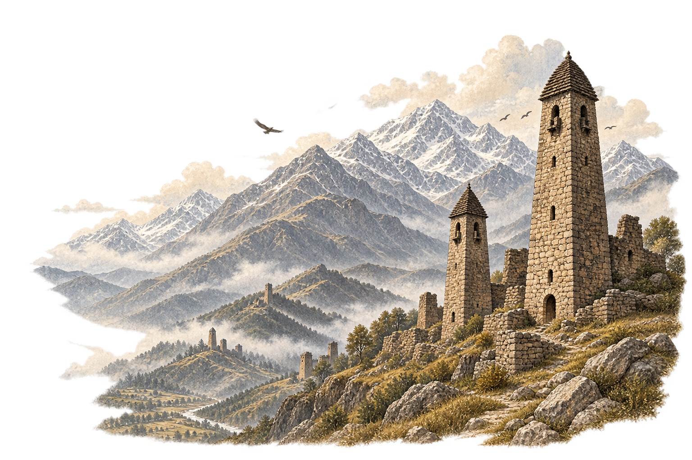

ca. 1200 f.Kr. — august 2026
Historien som overlevde
Fra de første sporene i jorden til en levende diaspora — en bok om det vi vet, det vi husker og det vi fortsatt leter etter.
12 kapitler · 34 hendelser · kildehenvisninger ved teksten

Historie overlever i lag.
Denne boken holder bevisene ved siden av fortellingen: arkeologi, skriftlige arkiver, materiell kultur og muntlig minne.
I
Krøniken
Fire bind. Tolv kapitler. Én historie som fortsatt er åpen for rettelser.
II
Tidslinje
Hendelser presenteres ikke som like sikre. Følg hendelsen inn i kapittelet og videre til kilden.
III
Historie i lag
Jordarkeologi · landskap · gjenstander
Tekstkrøniker · arkiver · rettsdokumenter
Stemmesanger · slektslinjer · vitnesbyrd
Krysslesningder uavhengige lag møtes
IV